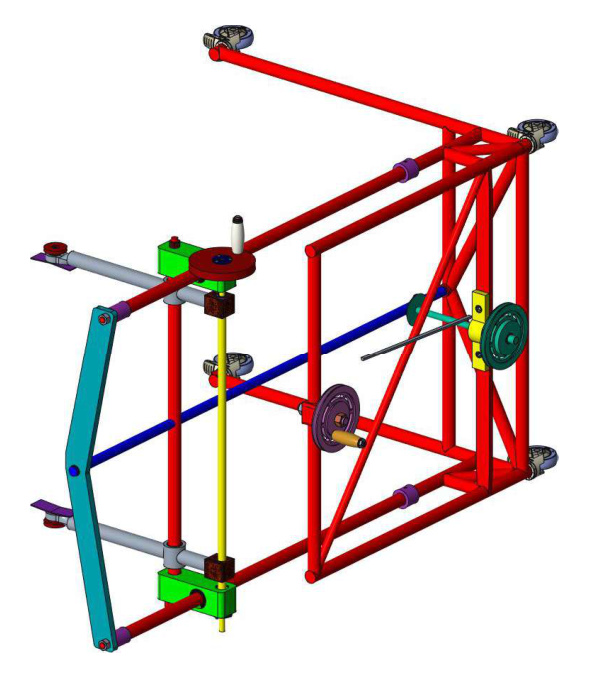
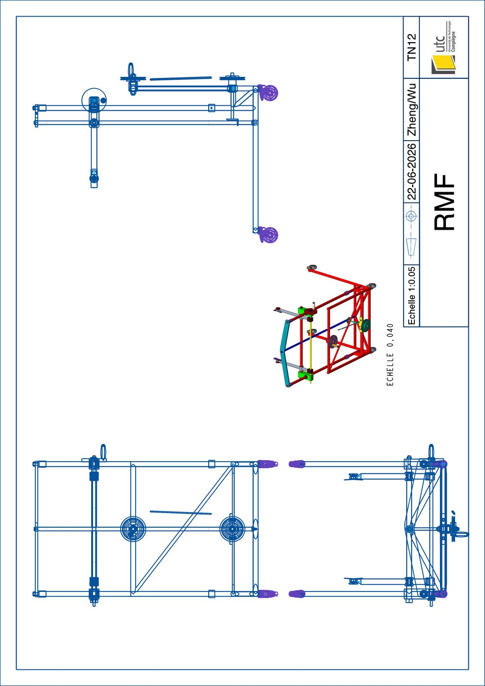

Machine de manutention de fromages

Une machine qui saisit une meule de fromage, la fait pivoter et la monte ou la descend pour la manutention en cave d'affinage. Elle a été conçue sous Creo comme un assemblage complet d'environ 90 pièces, du bâti soudé jusqu'à la visserie normalisée, aux roulements et aux ressorts.
Projet de conception mécanique TN12 à l'Université de Technologie de Compiègne (UTC), juin 2026, avec C. Zheng.
Le fonctionnement
Trois mouvements, tous actionnés à la main, pour que la machine n'ait besoin d'aucune énergie en cave :
- Serrage: un système vis-écrou, entraîné par une manivelle, referme les deux bras de la pince sur la meule.
- Rotation: les bras pivotent pour amener la meule de la verticale à l'horizontale.
- Levage: les chariots montent et descendent le long du bâti grâce à une transmission par courroie et poulies.
L'assemblage est entièrement paramétré. La course de serrage, l'angle des bras et la hauteur des chariots sont pilotés par des cotes d'esquisse, ce qui permet de poser directement n'importe quelle position dans le modèle.
L'assemblage
L'assemblage Creo complet, exporté au format STEP. Faites glisser pour tourner le modèle, utilisez la molette pour zoomer.
Le plan d'ensemble
Le plan tiré de l'assemblage : trois vues orthographiques, une perspective isométrique et le cartouche.
{kind=link}
